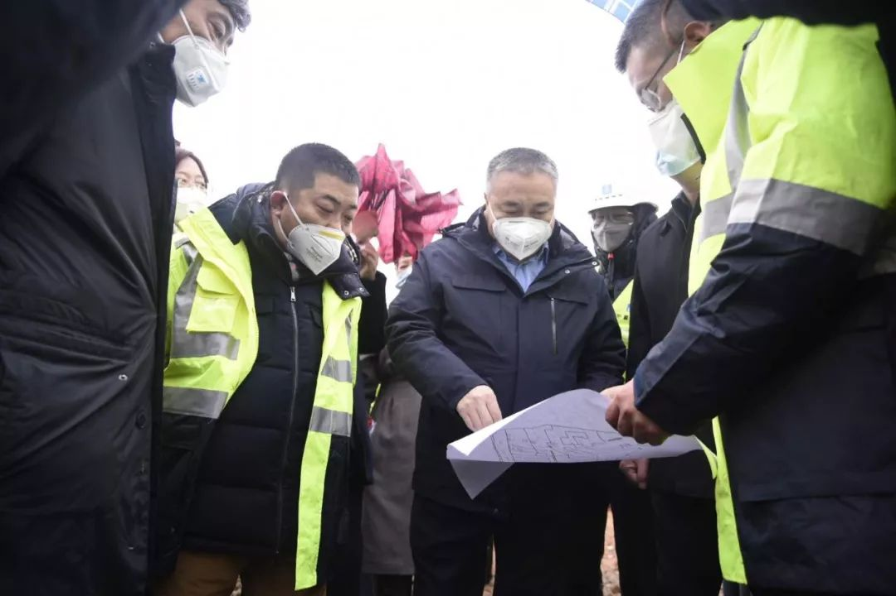
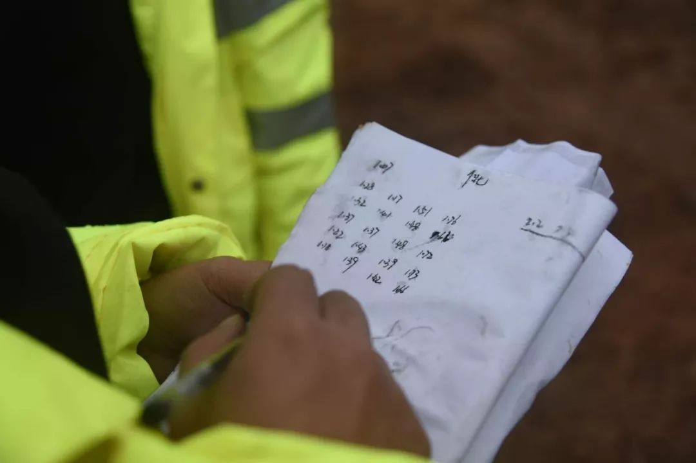

作家方方：来的基本是轻症，拐点在望-作家方方-财新博客-新世纪的常识传播者-财新网
原文链接 备份链接 正月二十六。 今天的阳光远不如昨天，但天空还很明亮。到了下午，有点阴。但不冷。看天气预报，这几天都会比较暖和。 还没起床，几天前曾捐款十万的画家朋友从纽约打来电话（不会有人说是通敌吧？），说另一位远在德国的苏姓画家也想 …
本文约2008字
预计阅读时间6分钟
中青报·中青网武汉前方报道组
全中国人在享用年夜饭的时候，武汉版“小汤山医院”的工地上，“场平”工作已接近完成。中国青年报·中国青年网记者在施工现场看到，上百台挖掘机同时在开动，负责运输砂石的土方车排起长龙。
新型冠状病毒感染的肺炎爆发以来，武汉市政府为加强对患者的救治，参照北京市2003年抗击非典型肺炎期间“小汤山医院”模式，建设一所专门医院。从1月23日施工开始，这座医院计划在7天内建成，2月3日投入使用。
除夕仍在加紧施工的工人们站在路边，端着盒饭当年夜饭。他们对记者说：“饭很香。”“保证完成任务。”
承建单位之一中建三局工作人员表示，他们将“不计报酬，不计成本，按时交工”。
新建的这所医院原址是武汉蔡甸知音湖武汉职工疗养院，建筑面积2.5万平方米，可容纳1000张病床，采用活动板房形式。
2003年，北京市为有效控制“非典”疫情，7天建成了可容纳1000张病床的小汤山医院，收治了全国七分之一的“非典”病人，1383名医护人员没有发生一例感染。
今天，武汉下着小雨，工人们大都一声不响地埋头苦干，只能听到“隆隆”的挖掘机和推土机的声音。工地遍地泥泞，部分区域刚刚铺上碎石。

按照惯例，施工遇上阴雨天气将停工。现场工作人员向记者表示，阴雨天气对施工有影响，但工期还在预期之内。在疫情紧急的情况下，只能“当不下雨”，把影响降到最低。
记者在现场粗略统计，今天同时施工的挖土机有上百台。一名工作人员介绍，目前参与第一阶段施工的工人约有300人，未来将增加到1500人-2000人。
这些工人中，很多人是前一晚接到通知，连夜赶往现场，有的今日清晨赶到后立即开工。其中一位工人说：“非常累，非常苦，但来了就要做好。”

中建三局一名工作人员告诉记者，调集大型作业机器比招人难度更大。昨天晚上，该公司加班到很晚，才调齐施工第一阶段所需机器。
据现场管理人员介绍，施工主要分为几个阶段，首先是场平，预计今夜完工。之后要埋管以解决排水排污问题，同时打地梁，预计一天完工。然后对地面进行硬化，就可以搭建活动板房了。
为了确保项目顺利完成，武汉市城建局成立了建设指挥部。项目由中信建筑设计院设计，中建三局、武汉建工、武汉市政、汉阳市政4家单位承建。
专家介绍，该项目是为了解决现有医疗资源不足、进一步加大患者救治力度的需要，“非建不可”。因为是活动板房，不仅建设速度快，而且花钱也不多，很实用。临时医院建成后，可使用3至5年。

中建三局工作人员表示，作为承建方之一，将全力以赴，攻坚克难，坚持质量第一、安全为先，在保安全、保质量的基础上，确保项目进度，高质量完成建设任务。
为了满足远程指挥的需求，这家临时医院还将开通5G移动通信网络。中国移动湖北公司武汉分公司工作人员接到武汉市要求紧急开通5G网络的通知后，连夜完成了建设方案和设计，并调集了全部通信工程物资。在5G建设的同时，还将原有4G网络的容量提升3倍以上，满足抗击新型肺炎、集中收治的需求，预计3天内完成5G信号架设及基础通信设施建设工作。

春节假期，部分工人返乡，为调集施工人员带来困难。武汉建工副总经理李芊此前对媒体表示，正在尽最大努力调动更多人员参与施工。
中建三局基础设施公司相关负责人则介绍，该公司在武汉的部分项目春节期间照常施工，500多名工人可随时抽调到这里。
一则紧急招募安装活动板房工人的信息今天在社交网站流传。中建三局工作人员表示，现阶段的工作主要是机器作业，不需要太多人力，暂时不缺人力，感谢大家的关心。不同工作阶段由不同的公司承包，后面即使有缺口，也会通过官方渠道发布。

今天，施工现场收到一份“春节礼物”：一名热心人士送来自费购买的1万个口罩。
多名施工人员表示，他们不是本地人，但由于武汉“封城”，回不了家，觉得在家休息不如来干点活儿。对于疫情，他们觉得“有点怕”，但“大家都戴口罩，应该问题不大”。
一名工人说，从上午8点到达施工现场，已经连续作业了10小时，中间只是吃午饭休息了一会儿。
至于什么时候换班，要工作到什么时候，他表示“还没有通知”。
记者了解到，由于工人相对紧缺，目前还没有轮班制度，有的人从清晨6点就投入了工作。
一名测量工来自江西九江，如果不是这次肺炎疫情，他将回到老家，在2月1日（正月初八）举办婚礼，亲朋好友的时间都约好了。1月23日清晨，他正准备通过武汉回家时，收到了武汉“封城”的消息。
“直到现在，我还是很想回家。”他说，“我不想改变婚礼的时间，打算今天明天的活儿做完了就想办法回家。”
1月23日晚，他接到了招工电话。他想的是闲着“不如来挣点钱”。当他告诉家人后，未婚妻打来很多电话，关心他有没有防护措施。
“现在只觉得很累。”在轰隆隆的工地上，他对中国青年报·中国青年网记者说，“希望武汉早日恢复平静，我能早点回去结婚。”

（中国青年报客户端武汉1月24日电）
中国青年报·中青在线出品
微信编辑 | 陈轶男

觉得好看请点这里
原文链接 备份链接 正月二十六。 今天的阳光远不如昨天，但天空还很明亮。到了下午，有点阴。但不冷。看天气预报，这几天都会比较暖和。 还没起床，几天前曾捐款十万的画家朋友从纽约打来电话（不会有人说是通敌吧？），说另一位远在德国的苏姓画家也想 …
原文链接 备份链接 编者按： 据央视新闻，武汉市政府将参照北京小汤山的模式建立急救医院，建筑面积达到2.5万平方米，可容纳1000张病床，医院将在6天内建成。 2003年，小汤山医疗点在对抗非典的战役中成效显著：一周建成，成为当时世界最大 …
原文链接 备份链接 记者 | 刘畅 王梓辉 年轻人与老年人的两重世界 “我所在的镇距离武汉开车只要两个小时，武汉夜里凌晨两点多宣布封城，我们镇上有人夜里就开车回来了。”家住在武汉西边荆州监利县网市镇的蔡姗发现，在武汉肺炎疫情开始上涨的1 …
原文链接 备份链接 【财新网】（记者 萧辉）1月21日，武汉市卫健委公布了武汉9家救治发热患者的定点医院，按照规定，从1月22日开始，所有体温超过37.3度的患者将集中到九家定点医院诊治，武汉市红十字会医院即是其中一家。22日是新规章实 …
原文链接 备份链接 不管是医生、护士、病患、疑似病患，还是星夜出城的情侣、着急的母亲、加班的创业者，没有人提到现在是春节，今天是除夕 文 |《财经》记者 房宫一柳 陈晶 编辑 | 宋玮 一些武汉人起床晚，他们可能比全国网民更晚知道武汉“封 …